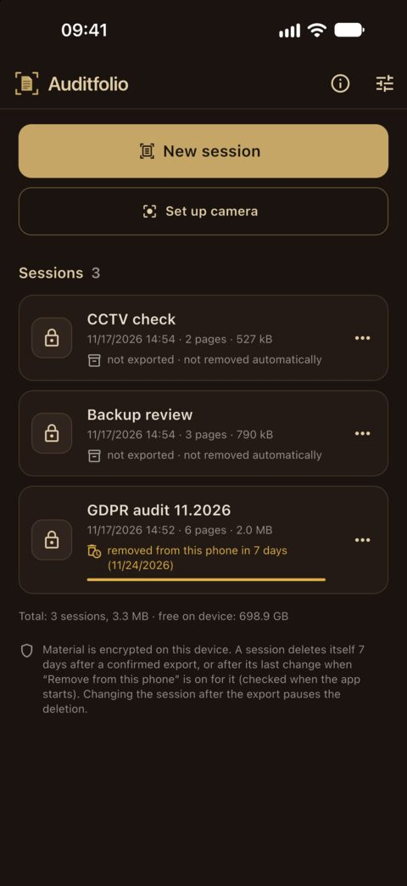
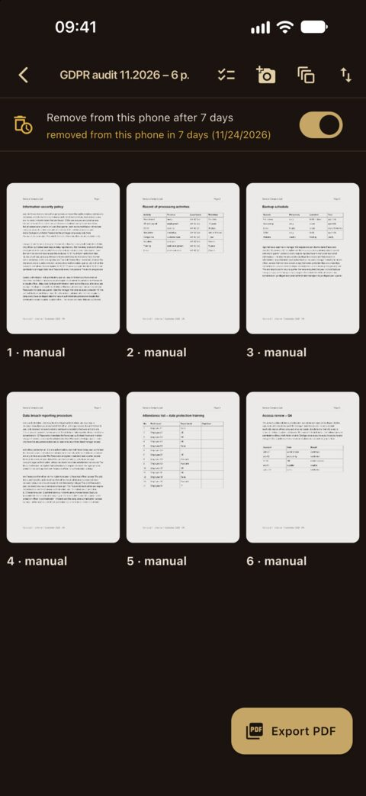
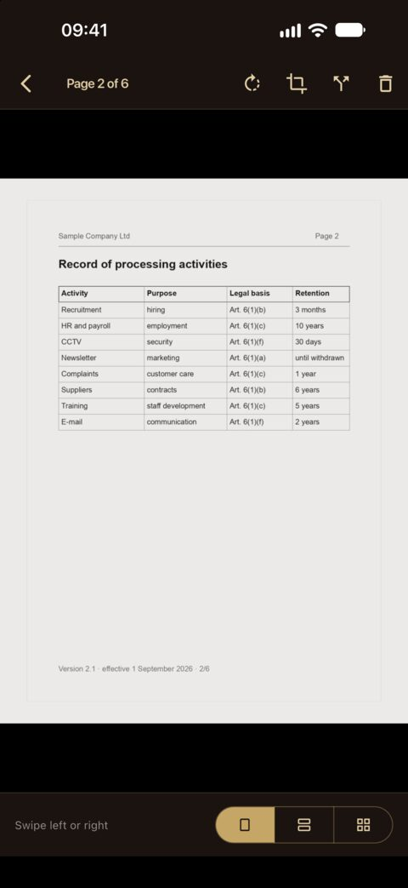
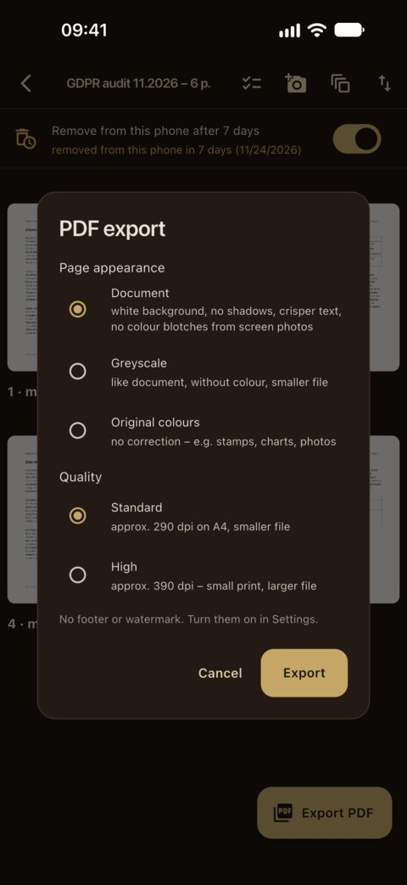

User guide
Auditfolio collects documents during an audit: paper pages and whatever someone shows you on a screen. Photos are encrypted on the device, and at the end you get a searchable PDF.
Before you start
The app asks for camera access before the first photo. Opening a saved session requires Face ID, Touch ID or the device passcode.
"Set up camera" on the home screen helps you find the right distance and light. The sharpness, glare, document and stillness indicators turn green when the framing is good. Nothing is saved on this screen.
New session
Tap "New session" and enter a name, for example the client and the date. The name is used for the PDF file name.
"Automatic photos" decides whether the app takes photos by itself. When it is off, you take photos only with the "Manual" button. "Highest photo quality" captures more detail, but each photo takes longer. You can change it while shooting with the "HQ" button.

Taking photos
In automatic mode, hold the phone over the document and turn the pages. The app waits until the image is still and sharp and confirms each save with a short flash showing the page number. A page very similar to the previous one is saved with a flag to check.
Scroll a document on a screen slowly, so that consecutive photos overlap. If they do not, the review will point out a possible gap.
At the bottom you have "Pause", "Manual" and "Finish" plus the "Auto" switch. "Detect page" recalculates the document frame, for example after switching to a smaller sheet.
Tips: paper documents
Place the sheet on a dark, matte surface or folder. With good contrast against the background the app finds the page edges more reliably.
Diffuse light from above or from the side works best. Avoid a lamp directly over the sheet, as the phone and your hand will cast a shadow. Take pages out of plastic sleeves and avoid glossy paper under a lamp – glare hides the text. The glare indicator in “Set up camera” shows whether the spot is good.
Hold the phone parallel to the sheet so the whole page fits in the frame with a small margin. For many pages, rest your elbows on the table or use a stand and put each new sheet in the same place – automatic mode does the rest.
Press stapled or bound documents flat near the spine, because a curved page blurs the text at the edge. Turn on “HQ” for small print, and if colour stamps and signatures matter, choose “Original colours” when exporting.
Tips: computer screens
Before you start, ask the auditee to close unnecessary windows and silence notifications. The photo should show nothing beyond the material you agreed on.
Zoom the document on screen (e.g. to 125–150%) and maximise the window. Larger text is recognised better and the phone does not need to be close to the monitor.
Hold the phone straight in front of the screen and parallel to it. When tilted, the text near the edges loses sharpness. If the preview shows coloured stripes (moiré), move the phone a few centimetres closer or further away, or rotate it slightly.
Remove reflections from windows and lamps by changing the monitor angle or switching off the light behind you. Turn a very bright monitor down to medium brightness. A document in a light theme, dark text on white, gives a cleaner PDF.
Scroll slowly, with some overlap between photos. When exporting, the “Document” look removes the colour blotches typical of screen photos.
Reviewing pages
After "Finish" you see thumbnails. Flags under a thumbnail include "similar to the previous one", "may be blurry" and a missing overlap.
Tap a page to enlarge it. There you can rotate it, fix the crop (corners, "Automatic" or "Whole photo"), start a new document from it, or delete it. A new document means the export creates a separate PDF file.
The top bar offers selecting several pages to delete, "Add pages" (camera in manual mode), "Find repeats" and "Page order", where you hold a page and drag it to a new place.


Exporting a PDF
Tap "Export PDF" and choose the page look: "Document" (white background, clear text), "Greyscale", or "Original colours" when stamps, charts or photos matter. Standard quality is about 290 dpi on A4, high is about 390 dpi.
The PDF gets an invisible layer of text recognized on the device (Polish and English), so you can search it. Save or send the file through the system share sheet, for example "Save to Files".
After saving, the app asks whether you have checked the PDF. Only this confirmation starts the countdown to removing the session from the phone.
In "Settings" you can turn on PDF encryption with a random password, a footer with the session name, page number and date, and a watermark. The password is shown in the session and in the ⋯ menu on the session list. Share it through a different channel than the file, for example by text message.

Storage and deletion
Photos and session names are encrypted on the device. They never go to the photo library or to iCloud backup.
After a confirmed export, a session deletes itself from the phone after 7 days. The "Remove from this phone after 7 days" switch in the session review does the same without an export; the period then counts from the last change. Any change to a session after export pauses the deletion.
The session list shows when each session will disappear. You can also delete a session right away from the ⋯ menu on the list. Exported PDF files stay wherever you saved them.
Audit evidence
ISO 19011 treats as audit evidence the records, statements of fact or other information that are relevant to the audit criteria and verifiable. A photo of a page lets you show later what a finding was based on, instead of reconstructing it from memory.
Agree with the auditee, when planning the audit, that documents and screens may be photographed. Name the session so it is clear what it covers, and turn on the footer with the session name, page number and date when exporting.
Sample wording for the audit plan: “With the auditee's consent, the auditor may photograph documents and screens shown during the audit solely to record audit evidence. Photos are stored encrypted, accessible only to the audit team and removed from the device once transferred to the audit file. The auditee may exclude specific materials from being photographed.” Confirm this at the opening meeting.
The same standard advises auditors to use discretion and protect information obtained during the audit. That is why photos are encrypted, never go to the cloud, and the session can remove itself from the phone once the PDF is in the audit file.
Report a bug or suggest an idea
Write to the address below. For a bug, include the device model, iOS version, app version (the "About" screen) and the steps that lead to it.
Do not attach photos of documents or personal data. If a screenshot helps, take it with a sample document.